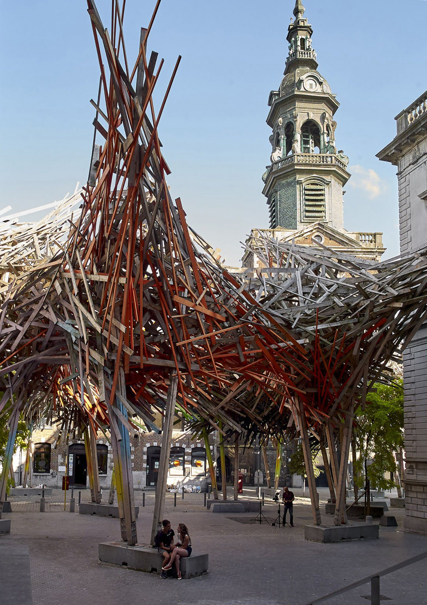

`
Arne Quinze is a Belgian contemporary artist, painter and sculptor. His work involves everything from small
drawings and paintings, medium-sized sculptures to massive installations. Quinze was born in Belgium in 1971
and currently lives and works in Sint-Martens-Latem, a town near the Belgian city of Ghent. His early career
in the 1980s was as a graffiti artist. He always questioned the role of our cities and started his search for
cities to become open air museums. His work quickly evolved from Street Art to Public Art with recurring
themes as social interaction, urbanisation and diversity.
The gigantic wooden construction entitled Uchronia, which he and his team built in the Nevada desert (USA) for
the 2006 Burning Man festival, emphasized his pursuit for culture and nature to coexist. This was followed by
numerous sculptures and exhibitions that included both large installations and small paintings and sculptures.
At the present time, many of his installations are considered to be landmarks that present a different dynamic
for urban development: In Paris, Shanghai, Beirut, Washington DC, Brussels, Mumbai, Sao Paolo,… Quinze has
been intervening in cities now for over 25 years, and many projects are still lined up to be finalised.
Uchronia, Nevada Desert, USA

What drives Quinze is the belief in the possible realization of an idealistic society where all individuals
communicate and interact, aiming to bring people together and push them into a vigorous dialogue. His
unconventional public installations have challenged perceptions in the city centers of Belgium (Cityscape,
The Sequence, Rock Strangers, The Passenger), Germany (The Traveller), France (Camille, Rock Strangers),
Lebanon (The Visitor), China (Red Beacon), Brazil (Matarazzo), the USA (Timegate, Whispers, Scarlet), among
others.
‘Cities like open-air museums – it sounds like an idealistic dream, but I am striving to realize this dream.
Confronting a public surrounded by art every day. Art has a positive influence on people and their personal
development: it broadens their horizons and renders them more tolerant towards differences in society.’
— Arne QuinzeScarlet Natural Chaos, Washington D.C., USA
The beauty of nature
Arne Quinze's sculptures come into being after numerous personal encounters with the unbridled beauty of
nature. They symbolise his reflection on todays growing differences between the diversity of nature and the
ongoing expansion of monotone cities.
While continuously unraveling the physical processes of complex demographies they react to all impulses in
order to keep equilibrium. Resulting in a play of attraction and rejection that shapes the organic forms and
electric bright colours. At first glance they seem vulnerable, but they wil persist a vigour dialogue just
like nature.’
In every culture Quinze comes across, he is fueled by overwhelming optimism. Every new creative breed captures
his research and study on interaction, and urban movement expressing the continuously evolution of human
beings and their environment. Besides building architectural sculptures, he creates complex art pieces and
video installations inscribing his vision in society of how people see themselves and society. Works as
Bidonvilles, Stilthouses, Chaos, My Home My House My Stilthouse, My Safe Garden, Natural Chaos and Natural
Chaos Satellites have been shown on several exhibitions.
Diversity
In each of Arne Quinze’s recent works we encounter a seemingly chaotic confrontation between individual
elements that form an integral part of a biotope that is created in laboratory conditions and is
multiplied
organically. The variety of colour and form is as wide as the viewer’s imagination. The artist hereby
depicts a society as a coherent and intact ecosystem, a sampling of nature, which is his chief
inspiration.
In this way, the sculptures and installations call for a retention of diversity and pluralism, and for
experiment and cross-fertilisation. This is a clear indictment of the present trend towards monocultures
and
soured relations.
Bringing people back together again: according to Quinze, this should be the ultimate objective of public
art. After an initial surprising impression, a sculpture is able to refine the threshold of acceptance for
the passer-by, by flying in the face of the norm – norms lead only to monotonous grey cities. Just as in
the
artworks, and just as in nature, cities should aim for a symbiosis of numerous organisms, which in their
turn fuel conversation and consequently the conservation of their future.
In fact the artist quite literally challenges monocultures. With his garden as a scale model, an explosion
of life with the rampant splendour of flowers, the pursuit of variation and diversity is both a statement
and a leitmotiv that runs through his work. The fact that we have already destroyed 30% of existing flora
and fauna since Quinze’s birth in 1971 is abhorrent to him. It is in everyone’s interest to protect and
restore ecosystems.